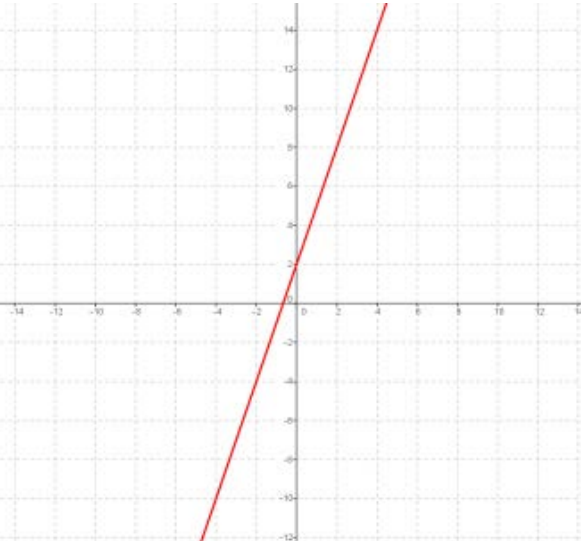
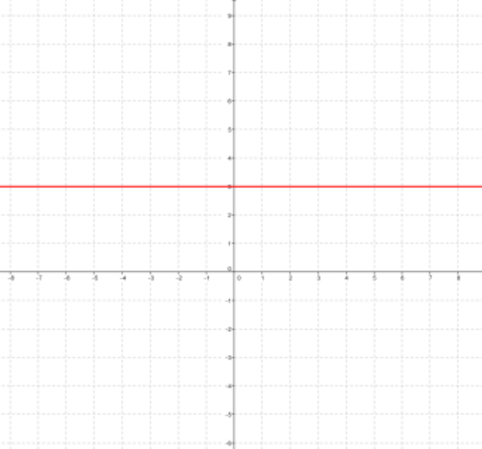
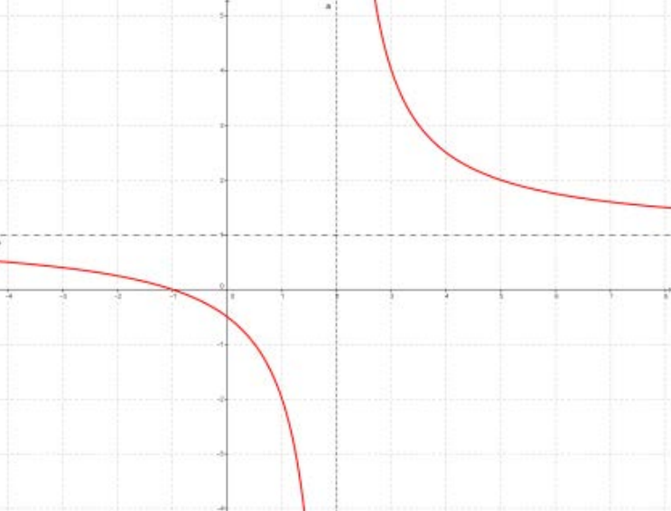
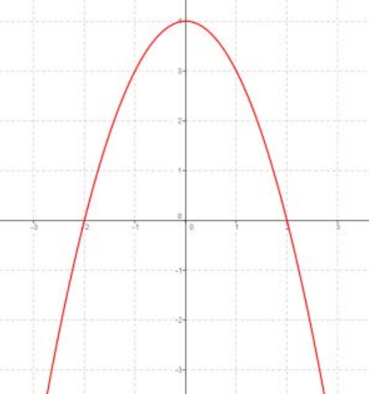

¿Qué es la monotonía de una función?
La monotonía de una función es una característica que describe los intervalos de crecimiento, decrecimiento y constantes de la función.
- Una función es creciente en un intervalo cuando al aumentar el valor de la variable independiente
aumenta también el de la variable dependiente.
- Una función es decreciente en un intervalo si al aumentar el valor de la variable independiente
disminuye el de la variable dependiente.
- Una función es constante en un intervalo cuando la variable dependiente toma siempre el mismo valor.
Como indican las definiciones, la monotonía de una función se da en un intervalo. Por tanto, una
función puede ser creciente para una serie de valores, para otros ser decreciente o constante, luego
puede volver a ser creciente o decreciente o constante…
Algunos ejemplitos...
a) La siguiente función es siempre creciente.

Autoría: Óscar Gómez Palomares. ©
b) La siguiente función es siempre constante. 
Autoría: Óscar Gómez Palomares. ©
c) La siguiente función es siempre decreciente. 
Autoría: Óscar Gómez Palomares. ©
d) La siguiente función es creciente desde (-∞,0) y decreciente de (0,∞). 
Autoría: Óscar Gómez Palomares. ©
e) La siguiente función es creciente en (-∞,0) U (1,∞) y decreciente en (0,1).
Autoría: Óscar Gómez Palomares. ©
Extremos de una función
Los extremos de una función son los puntos en los que la función cambia su monotonía, es decir, cambia de creciente a decreciente (MÁXIMO) o de decreciente a creciente (MÍNIMO).
Los extremos pueden ser relativos o absolutos.
- Un máximo es absoluto si es el mayor máximo de toda la función.
- Un mínimo es absoluto si es el menor mínimo de toda la función.
- Un máximo es relativo si existen máximos mayores a este en la función.
- Un mínimo es relativo si existen mínimos menores a este en la función.
Ejemplos
- En las gráficas [a,b,c] anteriores, no existen máximos ni mínimos (relativos ni absolutos) porque estas funciones siempre tienen la misma monotonía.
- La gráfica [d] anterior tiene un máximo en x = 0 cuyo valor es y = 4. Es decir, hay un máximo en el punto (0,4). Además, este es el máximo absoluto porque no existen otros máximos en la función.
- La gráfica [e] anterior tiene un máximo en x = 0 cuyo valor es y = 2. Es decir, hay un máximo en el punto (0,2). Pero este sería un máximo relativo (no absoluto) porque la función "se va a infinito por la derecha y por tanto el máximo es infinito". También dispone de un mínimo en x = 1 cuyo valor es y = 1. Es decir, hay un mínimo en el punto (1,1). Pero este sería un mínimo relativo (no absoluto) porque la función "se va a infinito por la izquierda y por tanto el mínimo es infinito".
La siguiente gráfica de una función es decreciente en (−∞,−2) ∪ (−2,0) y creciente en (0,2) ∪ (2,+∞), y presenta un mínimo en x = 0 de valor 0.25. Es decir, hay un mínimo en el punto (0, 0.25). Este sería un mínimo relativo (no absoluto) porque la función "se va a infinito por ambos lados y por tanto el mínimo es infinito".

La siguiente función es siempre decreciente, por lo que no presenta extremos (ni máximos ni mínimos).
SuperProf. (CC0)
La siguiente gráfica de una función es decreciente en (−∞,−1) ∪ (0,1) y creciente en (-1,0) ∪ (1,+∞), presenta un mínimo absoluto en x = -1 de valor 0 y otro en x = 1 de valor 0, y un máximo relativo en x = 0 de valor 1. Es decir, hay dos mínimos absolutos en los puntos (-1,0) y (1,0) y un máximo relativo en (0,1).
SuperProf. (CC0)